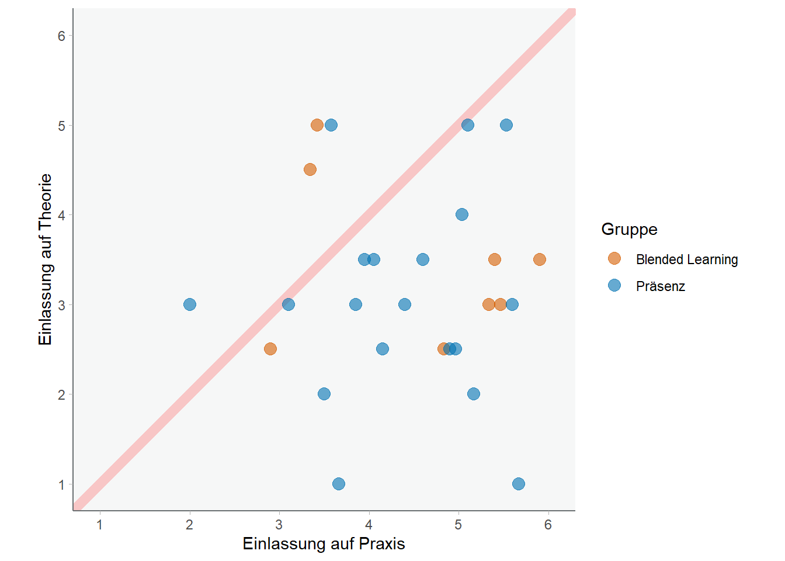
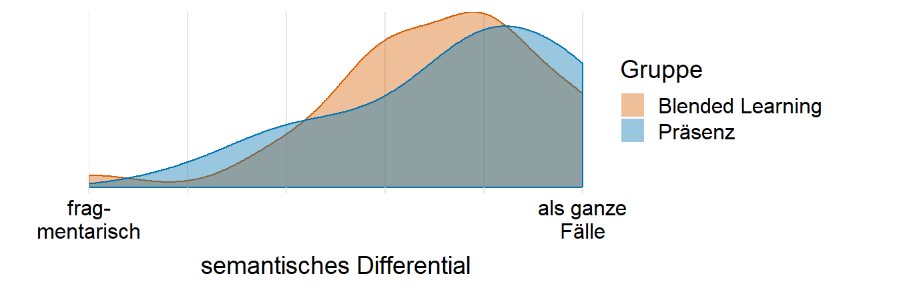
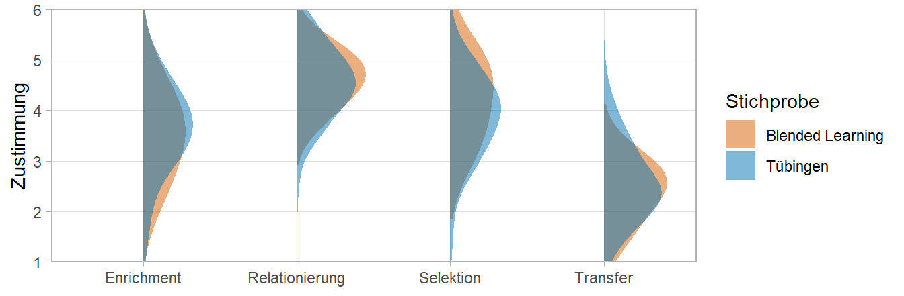

Fälle werden besonders aus der Praxisperspektive gedeutet

Praxisbegleitung in der Cloud.
Jürgen Schneider 1, 
@artzyatfailing2
juergen.schneider@uni-tuebingen.de
Marcus Syring1 Britta Kohler1
1 Eberhard Karls Universität Tübingen
Theorie
Das Relationierungskonzept (Dewe et al., 1992) schlägt Hybridität, also die Aufrechterhaltung wissenschaftlicher Theorie und schulischer Praxis, als differente Perspektiven (Bhabha, 1994) bei der Deutung pädagogischer Schlüsselsituationen vor. Ein Third Space ermöglicht demnach hybride Deutungen und die Generierung neuer Bedeutungskonstruktionen (Schneider & Cramer, 2020). Voraussetzung: Studierende konnten sich bereits in beide Kulturen einlassen.
Ziele
- Third Spaces zur Relationierung von wissenschaft-licher Theorie und schulischer Praxis eröffnen.
- Sowohl Einlassung auf wissenschaftliche Theorie als auch schulische Praxis ermöglichen.
Methode
- Blended-Learning Begleitseminar zum Praxissemester
- Aufgaben beinhalten wissenschaftlicher Literatur
- Deutungen in individueller und kooperativer Fallarbeit
- Evaluation: Querschnittserhebung von…
- Voraussetzung: Ausmaß der Einlassung auf wissenschaftliche Theorie und schulische Praxis
- Einbringung von Fällen als Rahmung des Third Space
- Hierarchielosigkeit (Hybridität) in der Deutung
- Überzeugungen zum Theorie-Praxis-Verhältnis

Kurs Demo:
bit.ly/icpl-demo

Survey Demo:
icpl-demo.formr.org
Ergebnisse
Inwiefern konnten sich die Studierenden auf die jeweiligen Ausbildungsteile einlassen? 6-stufige Likert Items: “Während der Praktikumszeit konnte ich mich ganz auf den Schul- und Unterrichtsalltag konzentrieren.”

Figure 1: Einlassung auf Theorie und Praxis
Inwiefern hat das Seminar die Studierenden dazu angeregt kohärente Fälle als Rahmung für Third Space einbringen? 6-stufige Semantische Differentiale z.B. “fragmentarisch”-“als ganze Fälle”

Figure 2: Art des Einbringens praktischer Erfahrung
Welche Überzeugungen zum Verhältnis von Theorie und Praxis (Dewe et al., 1992) vertreten die Studierenden?

Figure 3: Überzeugungen der Studierenden
Literatur
Bhabha, H. K. (1994). The location of culture. Routledge.
Dewe, B., Ferchhoff, W., & Radtke, F.-O. (1992). Das "Professionswissen" von Pädagogen: Ein wissenstheoretischer Rekonstruktionsversuch. In B. Dewe (Ed.), Erziehen als Profession: Zur Logik professionellen Handelns in pädagogischen Feldern (pp. 70–91). Leske und Budrich.
Schneider, J., & Cramer, C. (2020). Relationierung von Theorie und Praxis: Was bedeutet dieses Konzept für die Begleitung von Praktika in der Lehrerinnen- und Lehrerbildung? In K. Rheinländer & D. Scholl (Eds.), Verlängerte Praxisphasen in der universitären Lehrerbildung: Spannungsfelder zwischen Theorie, Praxis und der Bestimmung von Professionalisierung (pp. 23–38). Klinkhardt.